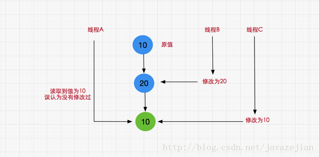
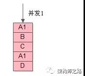
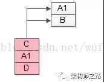
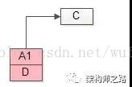
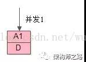
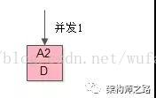

java_并发编程03Atomic原子类和CAS¶
Java从JDK1.5开始提供了java.util.concurrent.atomic包，方便程序员在多线程环境下，无锁的进行原子操作,其中包括：AtomicBoolean、AtomicInteger、AtomicLong、AtomicReference。其底层就是volatile和CAS 共同作用的结果：
volatile 保证了内存可见性。
CAS（compare-and-swap）算法保证了原子性。 其中CAS算法的原理就是里面包含三个值：内存值A 预估值V 更新值 B 当且仅当 V == A 时，V = B; 否则，不会执行任何操作。
4种类型¶
基本类型:使用原子的方式更新基本类型
AtomicInteger：整形原子类
AtomicLong：长整型原子类
AtomicBoolean：布尔型原子类
数组类型:使用原子的方式更新数组里的某个元素
AtomicIntegerArray：整形数组原子类
AtomicLongArray：长整形数组原子类
AtomicReferenceArray：引用类型数组原子类
引用类型
AtomicReference：引用类型原子类
AtomicStampedReference：原子更新引用类型里的字段原子类
AtomicMarkableReference ：原子更新带有标记位的引用类型
对象的属性修改类型
AtomicIntegerFieldUpdater：原子更新整形字段的更新器
AtomicLongFieldUpdater：原子更新长整形字段的更新器
AtomicStampedReference：原子更新带有版本号的引用类型。该类将整数值与引用关联起来，可用于解决原子的更新数据和数据的版本号，可以解决使用 CAS 进行原子更新时可能出现的 ABA 问题。
AtomicInteger 类的原理¶
利用unsafe提供的原子性操作方法。用volatile关键字来保证（保证线程间的可见性）。
atomic 主要利用 CAS (Compare And Swap) 和 volatile 和 native 方法来保证原子操作，从而避免 synchronized 的高开销，执行效率大为提升。
AtomicInteger 类为例，部分源码如下：
// setup to use Unsafe.compareAndSwapInt for updates（更新操作时提供“比较并替换”的作用）
private static final Unsafe unsafe = Unsafe.getUnsafe();
private static final long valueOffset;
static {
try {
valueOffset = unsafe.objectFieldOffset
(AtomicInteger.class.getDeclaredField("value"));
} catch (Exception ex) { throw new Error(ex); }
}
private volatile int value;
AtomicInteger 类主要利用CAS (compare and swap) + volatile 和 native 方法来保证原子操作，从而避免 synchronized 的高开销，执行效率大为提升。
CAS的原理是拿期望的值和原本的一个值作比较，如果相同则更新成新的值。UnSafe 类的 objectFieldOffset() 方法是一个本地方法，这个方法是用来拿到“原来的值”的内存地址。另外 value 是一个volatile变量，在内存中可见，因此 JVM 可以保证任何时刻任何线程总能拿到该变量的最新值。
由于AtomicLong使用CAS：在一个死循环内不断尝试修改目标值直到修改成功。如果在竞争不激烈的情况下（主要指代写入竞争），它修改成功概率很高。反之，如果在(写入)竞争激烈的情况下，修改失败的概率会很高，它就会进行多次的循环尝试，因此性能会受到一些影响。
CAS¶
CAS是英文单词Compare and Swap的缩写，翻译过来就是比较并替换。一条cpu并发原语，判断内存中某个位置的值是否为预期值，如果是则更改为新值，这个过程是原子的。 CAS机制中使用了3个基本操作数：内存地址V，旧的预期值A，要修改的新值B。
//对象，内存偏移量，增加量
public final int getAndAddInt(Object var1, long var2, int var4) {
//var5存储的是期望值
int var5;
//自旋锁基本思想
do {
//获得主物理内存中的值
var5 = this.getIntVolatile(var1, var2);
}//比较并交换
while(!this.compareAndSwapInt(var1, var2, var5, var5 + var4));
//返回修改后的值
return var5;
}
JVM会帮我们实现出CAS汇编指令，完全依赖于硬件的功能，通过它实现了原子操作。
CAS是一种系统原语，由若干条指令组成。且原语的执行必须是连续的，执行过程中不允许被打断，也就是说CAS是一条CPU的原子指令，不会造成所谓的数据不一致问题
CAS的缺点
1） CPU开销过大，并发量比较高的情况下，线程反复尝试更新某一个变量
2） 不能保证代码块的原子性（只能解决一个变量的线程安全问题）
3） ABA问题
如下图

这就是典型的CAS的ABA问题，一般情况这种情况发现的概率比较小，可能发生了也不会造成什么问题，比如说我们对某个做加减法，不关心数字的过程，那么发生ABA问题也没啥关系。
但有时会有影响，
ABA会引发问题的额情况
再看一个堆栈操作的例子：
并发1（上）：读取栈顶的元素为“A1”

并发2：进行了2次出栈

并发3：又进行了1次出栈

并发1（下）：实施CAS乐观锁，发现栈顶还是“A1”，于是修改为A2

此时会出现系统错误，因为此“A1”非彼“A1”

解决ABA问题
01,版本号，每修改一次，版本号加一(AtomicReference)。
02,利用版本号（时间戳）来保证解决ABA的问题，也就是说保证每一行的数据都是保证唯一的(AtomicStampedReference)
Unsafe¶
Unsafe是CAS的核心类，由于Java方法无法直接访问操作系统低层，需要通过本地native方法来访问，Unsafe相当于一个后门，基于该类可以直接操作特定内存的数据
Unsafe类中的方法大多数都被native修饰，也就是说Unsafe类直接调用操作系统的底层资源去执行相应任务。
参考¶
【Java并发编程】之 Atomic 原子类：https://blog.csdn.net/aiwangtingyun/article/details/107140826
Java并发编程之原子性-Atomic详解：https://blog.csdn.net/qq_34871626/article/details/81411815
Java并发编程-AtomicXXX：https://blog.csdn.net/weixin_33910460/article/details/92687767
Java并发编程-AtomicInteger-CAS底层原理：https://blog.csdn.net/weixin_41730409/article/details/104465098
Java并发编程-无锁CAS与Unsafe类及其并发包Atomic：https://blog.csdn.net/javazejian/article/details/72772470#t11
CAS下ABA问题及优化方案：https://blog.csdn.net/wufaliang003/article/details/78797203